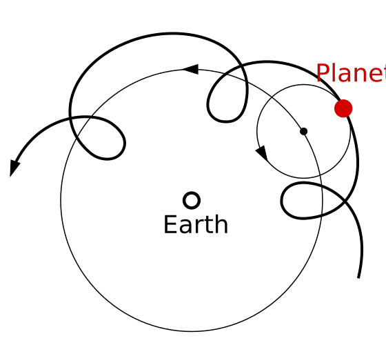
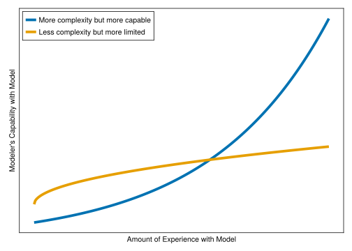

“Truth … is much too complicated to allow anything but approximations” - John von Neumann
3.1 In this Chapter
We explain what constitutes a financial model and what are common uses of a model. We explore the key attributes of models, discuss different modeling approaches and their trade-offs, and examine how to work effectively with data that feeds your models. We also explain what makes an adept practitioner.
3.2 What is a model?
A model represents aspects of the world around us distilled down into simpler, more tractable components. It is impossible to fully capture everything that may affect the objects of our interest. We may build models for a variety of reasons, as listed in Table 3.1.
Table 3.1: The REDCAPE model use framework, from “The Model Thinker” by Scott Page.
Use
Description
Reason
To identify conditions and deduce logical implications.
Explain
To provide (testable) explanations for empirical phenomena.
Design
To choose features of institutions, policies, and rules.
Communicate
To relate knowledge and understandings.
Act
To guide policy choices and strategic actions.
Predict
To make numerical and categorical predictions of future and unknown phenomena.
Explore
To investigate possibilities and hypotheticals.
For example, say we want to simulate the returns for the stocks in our retirement portfolio. It would be impossible to try to build a model which would capture all of the individual people working jobs and making decisions, weather events that damage property, political machinations, etc. Instead, we try to capture certain fundamental characteristics. For example, it is common to model equity returns as cumulative pluses and minuses from random movements where those movements have certain theoretical or historical characteristics.
Whether we are using this model of equity returns to estimate available retirement income or replicate an exotic option price, a key aspect of the model is the assumptions used therein. For the retirement income scenario we might assume a healthy eight percent return on stocks and conclude that such a return will be sufficient to retire at age 53. Alternatively, we may assume that future returns will follow a stochastic path with a certain distribution of volatility and drift. These two assumption sets will produce output - results from our model that must be inspected, questioned, and understood in the context of the “small world” of the model’s mechanistic workings. Lastly, to be effective practitioners we must be able to contextualize the “small world” results within the “large world” that exists around us.
3.2.1 “Small world” vs “Large world”
What do we mean by “small world” vs “large world”? Say that our model is one that discounts a fixed set of future cashflows using the US Treasury rate curve. If I run my model using current rates today, and then re-run my model tomorrow with the same future cashflows and the present value of those cashflows has increased by 5% I may ask why the result has changed so much in such a short period of time! In the “small”, mechanistic world of the model I may be able to see that the rates I used to discount the cashflows with have fallen substantially. The “small world” answer is that the inputs have changed which produced a mechanical change in the output. The “large world” answer may be that the Federal Reserve lowered the Federal Funds Rate to prevent the economy from entering a deflationary recession. Of course, we can’t completely explain the relation between our model and the real world (otherwise we could capture that relationship in our model!). An effective practitioner will always try to look up from the immediate work and take stock of how the world at large is or is not reflected in the model.
3.3 What is a Financial Model?
Financial models are those used extensively to ascertain better understanding of complex contracts, perform scenario analysis, and inform market participants’ decisions related to perceived value (and therefore price). It can’t be quantified directly, but it is likely not an exaggeration that many billions of dollars is transacted each day as a result of decisions made from the output of financial models.
Most financial models can be characterized with a focus on the first or both of:
Attempting to project pattern of cashflows or obligations at future timepoints
Reducing the projected obligations into a current value
Examples of this:
Projecting a retiree’s savings through time (1), and determining how much they should be saving today for their retirement goal (2)
Projecting the obligation of an exotic option across different potential paths (1), and determining the premium for that option (2)
Models are sometimes taken a step further, such as transforming the underlying economic view into an accounting or regulatory view (such as representing associated debits and credits, capital requirements, or associated intangible, capitalized balances).
We should also distinguish a financial model from a purely statistical model, where often the inputs and output data are known and the intention is to estimate relationships between variables (example: linear regressions). That said, a financial model may have statistical components and many aspects of modeling are shared between the two kinds.
3.3.1 Difference from Data Science
While practice and practitioners of financial modeling often substantially overlap, modeling in the sense used in this book is distinct from data science and statistics in all but the most general sense. To quickly define some terms as used in this book:
Statistics, or Statistical Modeling is the practice of applying procedures and probabilistic reasoning to data in order to determine relationships between things or to predict outcomes.
Data Science includes statistical modeling but also incorporates the art and science of good data hygiene, data pipelines and pre-processing, and more programming than a pure statistician usually uses.
Financial Modeling is similar in the goal of modeling complex relationships or making predictions (a modeled price of an asset is simply a prediction of what its value is), however, it differs from data science in a few ways:
Financial modeling generally incorporates a good deal of theory that assumes certain behaviors/relationships, instead of trying to infer those relationships from the data.
Financial modeling generally contains more unique ‘objects’ than a statistical model. The latter may have derived numerical relationships between data, however a financial model would have things like the concept of a company or portfolio, or sets of individually identifiable assets, or distinct actors in a system.
Financial modeling often involves a lot more simulation and hypothecating, while data science is focused on drawing conclusions from what data has already been observed.
Nonetheless, there is substantial overlap in practice. For example, the assumption in a financial model (volatility, economic conditions, etc.) may be derived statistically from observed data. Given the overlap in topics, statistical content is sometimes covered in this book (including a from-the-ground-up view of modern Bayesian approaches in Chapter 15).
3.4 Key considerations of a model
When creating a model, whether a data model, a conceptual model, or any other type, certain key considerations are generally important to include to ensure it is effective and useful. Some essential considerations include:
Consideration
Description
Objective
Clearly define what the model aims to achieve.
Boundaries
Specify the limits and constraints of the model to avoid scope creep.
Variables
Identify and define all variables involved in the model.
Parameters
Include constants or coefficients that influence the variables.
Dependencies
Describe how variables interact with each other.
Relationships
Detail the connections between different components of the model.
Inputs
Specify the data or resources required for the model to function.
Outputs
Define what results or predictions the model produces.
Underlying Assumptions
Document any assumptions made during the model’s development to clarify its limitations and validity.
Validation Criteria
Outline how the model’s accuracy and reliability are tested.
Performance Metrics
Define the metrics used to evaluate the model’s performance.
Scalability
Ensure the model can handle increased data or complexity if needed.
Adaptability
Allow for adjustments or updates as new information or requirements arise.
Documentation
Provide comprehensive documentation explaining how the model works, including algorithms, data sources, and methods.
Transparency
Make the model’s workings understandable to stakeholders or users.
User Interface
Design an intuitive interface if the model is interactive.
Ease of Use
Ensure that the model is user-friendly and accessible to its intended audience.
Ethics
Address any ethical concerns related to the model’s application or impact.
Regulations
Ensure compliance with relevant laws and regulations.
Including these attributes helps create a robust, reliable, and practical model that effectively serves its intended purpose.
3.5 Possible approaches and trade-offs
Different modeling approaches come with their own sets of trade-offs. Common modeling approaches, and the inherent trade-offs, may include:
Statistical Models
Examples: Linear regression, logistic regression
Trade-offs: - Simplicity vs. Accuracy: Statistical models are often simpler and more interpretable but may not capture complex relationships as well as more sophisticated models. - Assumptions: These models typically rely on assumptions (e.g., linearity, normality) that may not always hold true, potentially affecting their accuracy.
Machine Learning Models
Examples: Decision trees, random forests, neural networks
Trade-offs: - Complexity vs. Interpretability: Machine learning models, especially deep learning models, can capture complex patterns but are often less interpretable. - Overfitting: More complex models risk overfitting the training data, requiring careful validation and tuning to ensure generalizability. - Data Requirements: These models often require large amounts of data to perform well, and their performance can degrade with limited or noisy data.
Simulation Models
Examples: Monte Carlo simulations, agent-based models
Trade-offs: - Accuracy vs. Computational Expense: Simulations can model complex systems and scenarios but can be computationally expensive and time-consuming. - Detail vs. Generalization: High-fidelity simulations can be very detailed but might be overkill for problems where a simpler model would suffice.
Theoretical Models
Examples: Economic models, physical models
Trade-offs: - Precision vs. Practicality: Theoretical models provide a foundational understanding but may rely on idealizations or simplifications that don’t fully capture real-world complexities. - Applicability: They may be highly accurate in specific contexts but less applicable to broader or more variable situations.
Hybrid Models
Examples: Combining statistical and machine learning approaches, or combining theoretical and simulation models
Trade-offs: - Complexity vs. Versatility: Hybrid models aim to leverage the strengths of different approaches but can be complex to design and manage. - Integration Challenges: Combining different types of models may present challenges in integrating them effectively and ensuring consistency in their outputs.
Empirical Models
Examples: Time series forecasting, econometric models
Trade-offs: - Data Dependence vs. Predictive Power: Empirical models rely heavily on historical data and may not perform well in scenarios where patterns change or data is sparse. - Context Sensitivity: These models can be very accurate for the specific data they are trained on but might not generalize well to different contexts or conditions.
Trade-offs: - Flexibility vs. Computational Complexity: Probabilistic models can handle uncertainty and complex relationships but often require more sophisticated computations and can be harder to implement and interpret.
Summary of Common Trade-offs:
Complexity vs. Simplicity: More complex models can capture more nuanced details but are harder to understand and manage.
Accuracy vs. Interpretability: High-accuracy models may be less interpretable, making it harder to understand their decision-making process.
Data Requirements: Some models require large amounts of data or very specific types of data, which can be a limitation in practice.
Computational Resources: More sophisticated models or simulations can require significant computational power, which may not always be feasible.
Understanding these trade-offs helps in selecting the most appropriate modeling approach based on the specific needs of the problem at hand and the resources available.
3.6 How to work with data that feeds the models
Working effectively with data that feeds the models involves several key steps to ensure the data is suitable for modeling and that the model performs well. The steps may include:
Data Collection
Source Identification: Identify and gather data from relevant and reliable sources.
Data Acquisition: Use appropriate methods for collecting data, such as web scraping, surveys, sensors, or databases.
Data Exploration and Understanding
Descriptive Statistics: Generate summary statistics (mean, median, standard deviation) to understand the data’s central tendencies and variability.
Visualization: Use plots (histograms, scatter plots, box plots) to visually inspect distributions and relationships between variables.
Data Profiling: Assess data quality, completeness, and consistency.
Data Cleaning
Handling Missing Values: Decide how to address missing data—options include imputation, interpolation, or removing incomplete records.
Outlier Detection: Identify and handle outliers that may affect model performance. Outliers can be treated or removed based on their cause and impact.
Data Transformation: Normalize or standardize data if needed, especially if the model requires data in a specific format or scale.
Feature Engineering
Feature Selection: Choose relevant features that contribute to the model’s predictive power. This may involve techniques like correlation analysis or feature importance scores.
Feature Creation: Create new features from existing data that might provide additional insights or improve model performance. This could include polynomial features, interaction terms, or domain-specific transformations.
Data Splitting
Training and Testing Sets: Split the data into training and testing sets (and sometimes a validation set) to evaluate model performance and avoid overfitting.
Cross-Validation: Use cross-validation techniques (e.g., k-fold cross-validation) to assess model performance on different subsets of the data.
Data Preprocessing
Scaling and Normalization: Apply techniques such as min-max scaling or z-score normalization to ensure features are on a similar scale.
Encoding Categorical Variables: Convert categorical variables into numerical formats using methods like one-hot encoding or label encoding.
Data Augmentation: For certain applications (e.g., image processing), augment the data to increase the size and variability of the dataset.
Data Integration
Combining Datasets: If using multiple data sources, merge datasets carefully, ensuring consistent formats and handling discrepancies.
Data Alignment: Ensure that the data from different sources are aligned in terms of timing, units, and granularity.
Data Storage and Management
Data Warehousing: Store data in a structured format that facilitates easy access and management, such as databases or data lakes.
Version Control: Track changes to datasets over time to maintain reproducibility and manage updates.
Ethical Considerations
Bias and Fairness: Evaluate data for biases and ensure that the model does not perpetuate or amplify them.
Privacy: Protect sensitive information and comply with data privacy regulations such as GDPR or CCPA.
Continuous Monitoring and Updating
Performance Monitoring: Regularly assess the model’s performance using new data and update the model as needed.
Data Drift: Monitor for changes in data distribution over time (data drift) and retrain the model if necessary.
By following these steps, one can effectively manage data for your model, ensuring that it is clean, relevant, and capable of delivering accurate and reliable results.
3.7 Predictive versus Explanatory Models
Given a set of inputs, our model will generate an output and we are generally interested in its accuracy. The model need not have a realistic mechanism for how the world works. That is, we may primarily be interested in accurately calculating an output value without the model having any scientific, explanatory power of how different parts of the real-world system interact.
3.7.1 A Historical Example
Consider the classic underdog story where Copernicus overthrew the status quo when he proposed (correctly) that the earth orbited the sun instead of the other way around1.
The existing Ptolemic model used a geocentric view of the solar system in which the planets and sun orbited the Earth in perfect circles with an epicycle used to explain retrograde motion (as see in Figure 3.1). Retrograde motion is the term used to describe the apparent, temporarily reversed motion of a planet as viewed from Earth when the Earth is overtaking the other planet in orbit around the sun. This was accurate enough to match the obersvational data that described the position of the planets in the sky.

Figure 3.1: In the Ptolemic solar model, the retrograde motion of the planets was explained by adding an epicycle to the circular orbit around the earth.
Famously, Copernicus came along and said that the sun, not the Earth, should be at the center (a heliocentric model). Earth revolves around the sun! Today, we know this to be a much better description of reality than one in which the Earth arrogantly sits at the center of the universe. However the model was actually slightly less accurate in predicting the apparent position of the planets (to the limits of observational precision at the time)! Why would this be?
First, the Copernican proposal still used perfectly circular orbits with an epicycle adjustment, which we know today to be inaccurate (in favor of an elliptical orbit consistent with the theory of gravity). Despite being more scientifically correct, it was still not the complete picture.
Second, the geocentric model was already very accurate because it was essentially a Taylor-series approximation which described to sufficient observational accuracy the apparent position of the planet relative to the Earth. The heliocentric model was effectively a re-parameterization of the orbital approximation.
Third, we have considered a limited criteria for which we are evaluating the model for accuracy, namely apparent position of the planets. It’s not until we contemplate other observational data that the Copernican model would demonstrate greater modeling accuracy: apparent brightness of the planets as they undergo retrograde motion and angular relationship of the planets to the sun.
For modelers today, this demonstrates a few things to keep in mind:
Predictive models need not have a scientific, causal structure to make accurate predictions.
It is difficult to capture the complete scientific inter-relationships of a system and much care and thought needs to be given in what aspects are included in our model.
We should look at, or seek out, additional data that is related to our model because we may accurately fit (or overfit) to one outcome while achieving an increasingly poor fit to other related variables.
Striving to better understand the world is a good thing to do but trying to include more components into the model is not always going to help achieve our goals.
3.7.2 Examples in the Financial Context
3.7.2.1 Home Prices
American home prices which have a strong degree of seasonality and have the strongest prices around April of each year. We may find that including a simple oscillating term in our model captures the variability in prices better than if we tried to imperfectly capture the true market dynamics of home sales: supply and demand curves varying by personal (job bonus payment timing, school calendars), local (new homes built, company relocation), and national (monetary policy, tax incentives for home-ownership). In other words, one could likely predict a stable pattern like this with a model that contains a simple sinusoidal periodic component. One could likely spend months trying to build a more scientific model and not achieve as good of fit, even though the latter tries to be more conceptually accurate.
::: :::
3.7.2.2 Replicating Portfolio
Another example in the financial modeling realm: in attempting to value a portfolio of insurance contracts a replicating portfolio of hypothetical assets will sometimes be constructed2. The point of this is to create a basket of assets that can be more quickly (minutes to hours) valued in response to changing market conditions than it would take to run the actuarial model (hours to days). This is an example where the basket of assets has no ability to explain why the projected cashflows are what they are - but retains strong predictive accuracy.
3.8 What makes a good model?
The answer is: it depends.
3.8.1 Achieving original purpose
A model is built for a specific set of reasons and therefore we must evaluate a model in terms of achieving that goal. We should not critique a model if we want to use it outside of what it was inteded to do. This includes: contents of output and required level of accuracy.
A model may have been created to for scenario analysis to value all assets in a portfolio to within half a percent of a more accurate, but much more computationally expensive model. If we try to add a never-before-seen asset class or use the model to order trades we may be extending the design scope of the original model.
3.8.2 Usability
How easy is it for someone to use? Does it require pages and pages of documentation, weeks of specialized training and an on-call help desk? All else equal, it is an indicator of how usable the model is by the amount of support and training. However, one may sometimes wish to create a highly capable, complex model which is known to require a high amount of experience and expertise. An analogy here might be the cockpit of a small Cessna aircraft versus a fighter jet: the former is a lot simpler and takes less training to master but is also more limited.
Figure 3.2 illustrates this concept and shows that if your goal is very high capability that you may need to expect to develop training materials and support the more complex model. On this view, a better model is one that is able to have a shorter amount of time and experience to acheive the same level of capability.
┌ Warning: Found `resolution` in the theme when creating a `Scene`. The `resolution` keyword for `Scene`s and `Figure`s has been deprecated. Use `Figure(; size = ...` or `Scene(; size = ...)` instead, which better reflects that this is a unitless size and not a pixel resolution. The key could also come from `set_theme!` calls or related theming functions.
└ @ Makie ~/.julia/packages/Makie/GtFuI/src/scenes.jl:227

Figure 3.2: Tradeoff between complexity and capability
3.8.3 Performance
Financial models are generally not used for their awe-inspiring beauty - users are results oriented and the faster a model returns the requested results, the better. Aside from direct computational costs such as server runtime, a shorter model runtime means that one can iterate faster, test new ideas on the fly, and stay focused on the problem at hand.
Many readers may be familiar with the cadence of (1) try running model overnight, (2) see results failed in the morning, (3) spend day developing, (4) repeat step 1. It is preferred if this cycle can be measured in minutes instead of hours or days.
Of course, requirements must be considered here too: needs for high frequency trading, daily portfolio rebalancing, and quarterly valuations are different when it comes to performance.
3.8.4 Separation of Model Logic and Data
When business logic is embedded within data, or data inputs are spread out across multiple locations it’s tough to keep track of things. Using a spreadsheet as an example, often times it’s incredibly difficult to ascertain a model’s operation if inputs are spread out across locations on many tabs. Or if related calculations are performed in multiple locations, or if it’s not clear where the line is drawn between calculations performed in the worksheets or in macros.
3.8.5 Abstraction of Modeled Systems
At different times we are interested in different ladder of abstraction: sometimes we are interested in the small details, but other times we are interested in understanding the behavior of systems at a higher level.
Say we are an insurance company with a portfolio of fixed income assets supporting long term insurance liabilities. We might delineate different levels of abstraction like so:
Think about moving up and down a ladder of abstraction when analyzing a problem.
Table 3.2: An example of the different levels of abstraction when thinking about modeling an insurance company’s assets and liabilites.
Item
More Abstract
Sensitivity of an entire company’s solvency position
Sensitivity of a portfolio of assets
Behavior over time of an individual contract
More granular
Mechanics of an individual bond or insurance policy
At different times, we are often interested in different aspects of a problem. In general, you start to be able to obtain more insights and a greater understanding of the system when you move up the ladder of abstraction.
In fact, a lot of designing a model is essentially trying to figure out where to put the right abstractions. What is the right level of detail to model this in and what is the right level of detail to expose to other systems?
Let us also distinguish between vertical abstraction, as described above, and horizontal abstraction which will refer to encapsulating different properties, or mechanics of components of model that effectively exist on the same level of vertical abstraction. For example, both asset and liability mechanics sit at the most granular level in Table 3.2, But it may make sense in our model to separate the data and behavior from each other. If we were to do that, that would be an example of creating horizontal abstraction in service of our overall modeling goals.
3.9 What makes a good modeler?
A model is nothing without it’s operator, and a skilled practitioner is worth their weight in gold. What elements separate a good modeler from a mediocre modeler?
3.9.1 Domain Expertise
An expert who knows enough about all of the domains that are applicable is crucial. Imagine if someone said let’s emulate an architect by having a construction worker and an artist work together. It’s all too common for business to attempt to pair a business expert with an information technologist in the same way.
Unfortunately, this means that there’s generally no easy way out of learning enough about finance, actuarial science, computers, and/or programming in order to be an effective modeler.
Also, a word of warning for the financial analysts out there: the computer scientists may find it easier to learn applied financial modeling than the other way around since the tools, techniques, and language of problem solving is already more a more general and flexible skill-set. There’s more technologists starting banks than there are financiers starting technology companies.
3.9.2 Model Theory
If it is granted that financial modeling must involve, as the essential part, a building up of modeler’s knowledge, the next issue is to characterize that knowledge more explicitly. The modeler’s knowledge should be regarded as a theory, in the sense of Ryle’s3 “Concept of the Mind.” Very briefly: a person who has or possesses a theory in this sense knows how to do certain things and in addition can support the actual doing with explanations, justifications, and answers to queries, about the model and it’s results4.
A financial model is rarely left in a final state. Regulatory changes, additional mechanics, sensitivity testing, market dynamics, new products, and new systems to interact with force a model to undergo change and development through its entire life. And like a living thing, it must have nurturing caregivers. This metaphor sounds extended, but Naur’s point is that unless the model also lives in the heads of it’s developers then it cannot successfully be maintained through time:
The conclusion seems inescapable that at least with certain kinds of large programs, the continued adaption, modification, and correction of errors in them, is essentially dependent on a certain kind of knowledge possessed by a group of programmers who are closely and continuously connected with them.
Assume that we need to adapt the model to fit a new product. One possessing a high degree of model theory includes:
the ability to describe the trade-offs between alternate approaches that would accomplish the desired change
relate the proposed change to the design of the current system and any challenges that will arise as a result of prior design decisions
provide a quantitative estimation for the impact the change will have: runtime, risk metrics, valuation changes, etc.
Analogize how the system works to themselves or to others
Describe key limitations that the model has and where it is most divorced from the reality it seeks to represent.
Abstractions and analogies of the system are a critical aspect of model theory, as the human mind cannot retain perfectly precise detail about how the system works in each sub-component. The ability to, at some times, collapse and compartmentalize parts of the model to limit the mental overload while at others recall important implementation details requires training - and is enhanced by learning concepts like those which will be covered in this book.
An example of how the right abstractions (and language describing those abstractions) can be helpful in simplifying the mental load:
Instead of:
The valuation process starts by reading an extract into three tabs of the spreadsheet. A macro loops through the list of policies on the first tab and in column C it gives the name of the applicable statutory valuation ruleset. The ruleset is defined as the combination of (1) the logic in the macro in the “Valuation” VBA module with, (2) the underlying rate tables from the tabs named XXX to ZZZ, along with (3) the additional policy level detail on the second tab. The valuation projection is then run with the current policy values taken from the third tab of the spreadsheet and the resulting reserve (equal to the actuarial present value of claims) is saved and recorded in column J of the first tab. Finally, a pivot table is used to sum up the reserves by different groups.
We could instead design the process so that the following could be said instead:
Policy extracts are parsed into a Policy datatype which contains a subtype ValuationKind indicating the applicable statutory ruleset to apply. From there, we map the valuation function over the set of Policys and perform an additive reduce to determine the total reserve.
There are terminologies and concepts in the second example which we will develop over the course of this section of the book - we don’t want to dwell on the details bright now. However, we do want to emphasize that the process itself being able to condensed down to descriptions that are much more meaningful to the understanding of the model is a key differentiator for a code-based model instead of spreadsheets. It is not exaggerating that we could develop a handful of compartmentalized logics such that our primary valuation process described above could look like this in real code:
We’ve abstracted the mechanistic workings of the model into concise and meaningful symbols that not only perform the desired calculations but also make it obvious to an informed but unfamiliar reader what it’s doing.
parse , mapreduce, + , value , Policy are all imbued with meaning - the first three would be understood by any computer scientist by the nature of their training (and is training that this book covers). The last two are unique to our model and have “real world” meaning that our domain expert modeler would understand which analogizes very directly to the way we would suggest implementing the details of value or Policy. The benefit of this, again, is to provide tools and concepts which let us more easily develop model theory.
3.9.3 Curiosity
A model never answers all of the questions and many times find itself overdrawn: sometimes more questions arise then answers provided. It is our experience that you modeler who continues to pursue questions that arise as a result of the analysis and in particular possesses an Insatiable itch for resolving apparent contradictions in model conclusions. That is, if an incomplete understanding or an incorrect model allows one to arrive at contradictory conclusions it’s suggest that a deeper understanding or model revision is required.
3.9.4 Rigor
When developing a model it’s important to ensure that assumptions and parameters are very clear, the methodology is in line with establish theory, inappropriate thought has been given to how the model will be used. Additionally one should be mindful of standards of practice. For example, professional actuarial societies have a long list of Actuarial Standards of Practice (“ASOPs”), some of which apply to modeling and the use of data that models ultimately rely on.
3.9.5 Clarity
A rigorous understanding of the fundamentals is important as it is all too easy to let imprecise communication and terminology interfere with the task at hand. Many terms in finance are overloaded with multiple meanings depending on the context such as the speakers background or company norms. When there is a term that is prone to misunderstanding because of its multiple overloaded meanings, a practitioner should take care to use that term And convey which definition is intended either explicitly or through the appropriate context clues.
3.9.6 Humble
Irreducible & epistemic/reducible uncertainty…
3.9.7 Architecture
Any sufficiently complex project benefits from architectural thinking. Data should be separate from the logic and the model itself should not contain any substantial datum itself - instead dynamically load data from appropriate data stores and leave the “model” as the implementation of data types and algorithms.
3.9.8 Planning
When tackling a large problem, it helps
3.9.9 Toolset
An experience professional is aware of a number of approaches that can be used in solving a problem. From heuristics that are able to be calculated on a napkin to complex economic models, the ability to draw on a wide tool set allows a practitioner to find the right solution for a given problem. Further, it is the intention of this book to enumerate a number of additional approaches that may prove useful in practice.
See, e.g., SOA Investment Symposium March 2010. Replicating Portfolios in the Insurance Industry (Curt Burmeister Mike Dorsel Patricia Matson)↩︎
Ryle, G. The Concept of Mind. Harmondsworth, England, Penguin, 1963, first published 1949. Applying “Theory Building”↩︎
The idea of “model theory” is adapted from Peter Naur’s 1985 essay, “Programming as Theory Building”. Indeed, this whole paragraph is only a slightly modified version of Naur’s description of theory in the programming context.↩︎
 :::
:::